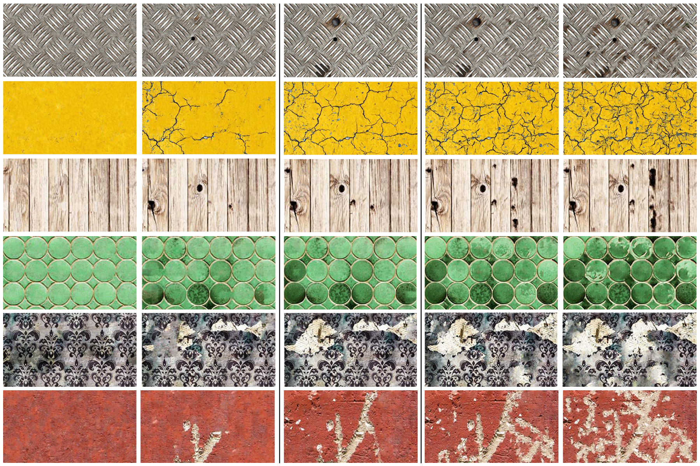
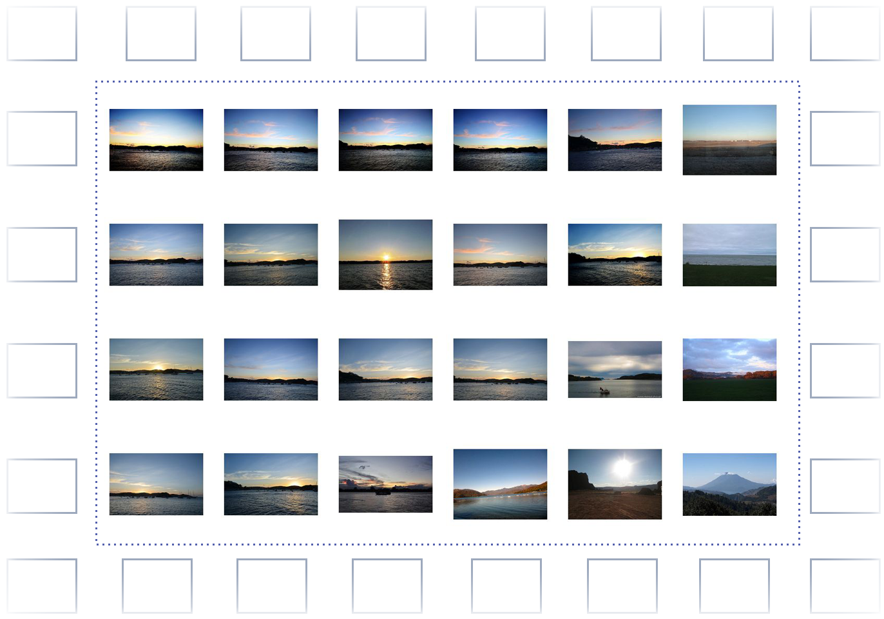
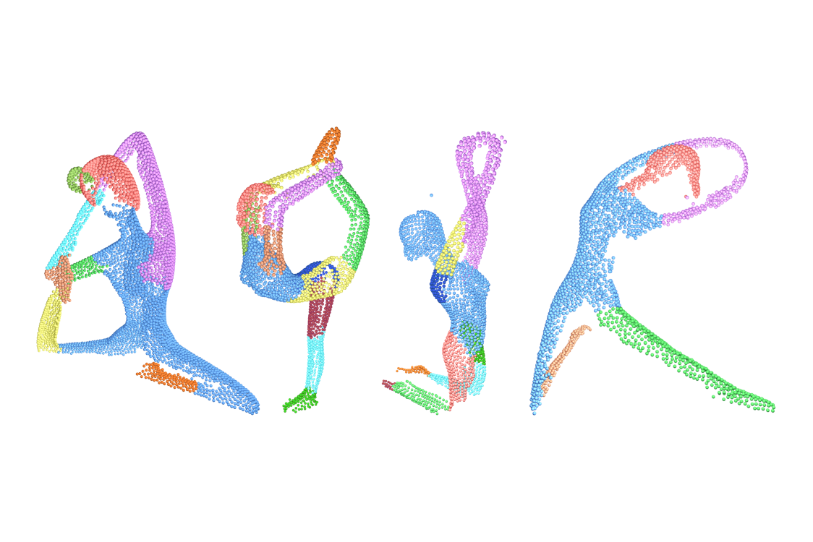
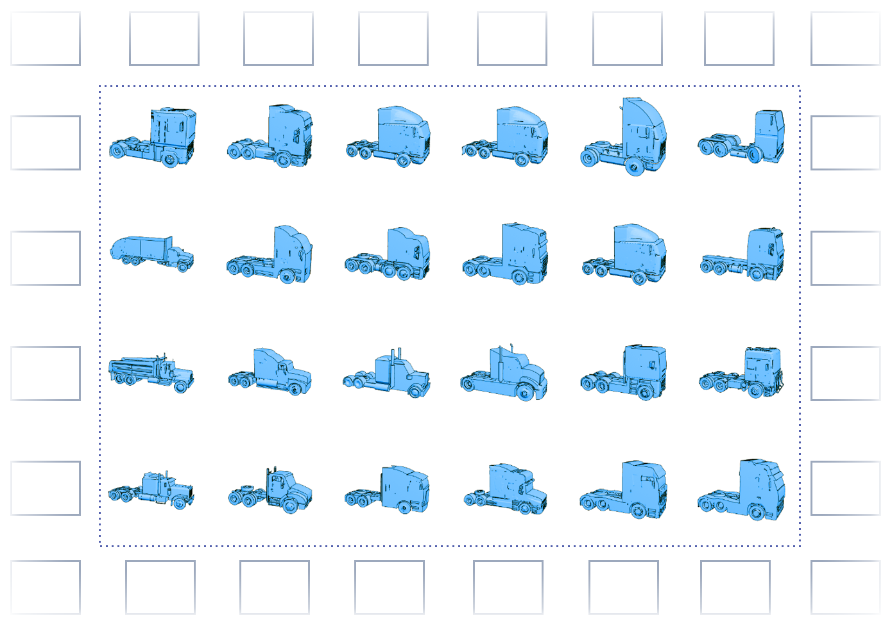
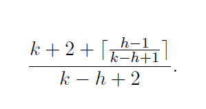

 Time-varying Weathering in Texture Space Rachele Bellini, Yanir Kleiman, Daniel Cohen-Or SIGGRAPH 2016 PDF VIDEO
Toward Semantic Image Similarity from Crowdsourced Clustering Yanir Kleiman, George Goldberg, Yael Amsterdamer, Daniel Cohen-Or CGI 2016 PDF
SHED: Shape Edit Distance for Fine-grained Shape Similarity Yanir Kleiman, Oliver van Kaick, Olga Sorkine-Hornung, Daniel Cohen-Or SIGGRAPH ASIA 2015 PDF PROJECT PAGE
 DynamicMaps: Similarity-based Browsing through a Massive Set of Images Yanir Kleiman, Joel Lanir, Dov Danon, Yasmin Felberbaum, Daniel Cohen-Or SIGCHI 2015 PDF DEMO VIDEO
 Shape Segmentation by Approximate Convexity Analysis Oliver van Kaick, Noa Fish, Yanir Kleiman, Shmuel Asafi, Daniel Cohen-Or ACM Transactions on Graphics, 2014 PDF
 Dynamic Maps for Exploring and Browsing Shapes Yanir Kleiman, Noa Fish, Joel Lanir, Daniel Cohen-Or Computer Graphics Forum (Proceedings of SGP), 2013 PDF DEMO VIDEO
Unsupervised Co-Segmentation of a Set of Shapes via Descriptor-Space Spectral Clustering Oana Sidi, Oliver van Kaick, Yanir Kleiman, Hao Zhang, Daniel Cohen-Or ACM Trans. on Graphics (Proc. SIGGRAPH Asia), 2011 PDF
 Paging with connections: FIFO strikes again Leah Epstein, Yanir Kleiman, Jiri Sgall, Rob van Stee Theoretical Computer Science, 377(1-3), 55-64, 2007 PDF